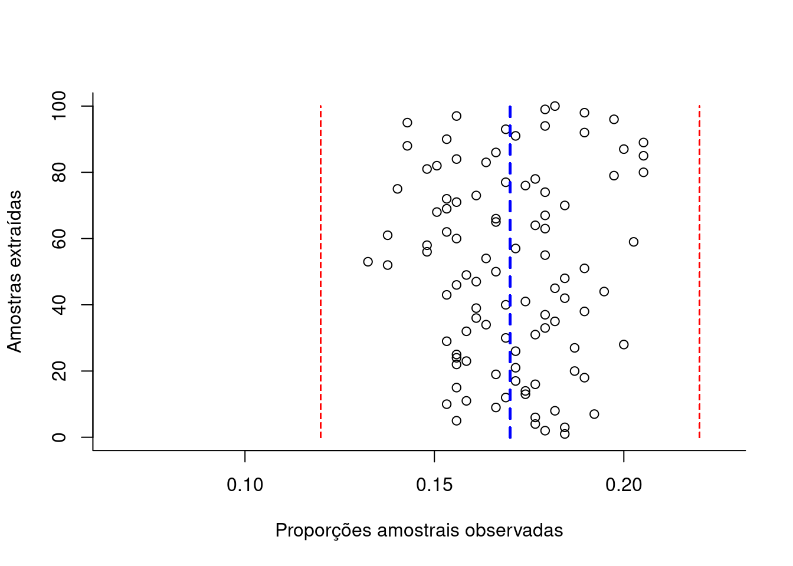

9.2 Intervalos de confiança
Um intervalo de confiança (\(IC\)) pode ser entendido com a faixa de valores delimitada por um mínimo e um máximo, calculados como função direta de um nível de confiança e da variabilidade e inversa da tamanho amostral.
\[ \text{estimativa amostral} \pm confiança.\sqrt\frac{variabilidade}{n} \]
Raramente se dispõe de informação a respeito da variabilidade (\(\sigma^{2}\)) da população estudada. Assim, a variabilidade populacional será frequentemente incorporado na expressão acima, com ligeiras modificações, na forma de sua estimativa amostral (\(S^{2}\)).
De certo modo, um intervalo de confiança reflete uma estimativa objetiva da (im)precisão e do tamanho da amostra de determinada pesquisa e, assim, podemos considerá-lo como uma medida da qualidade da amostra e da pesquisa.
O nível de confiança é designado pela quantidade \((1-\alpha)\) na qual \(\alpha\) é denominado de nível de significância, uma medida da probabilidade de erro.
Dependendo do nível de confiança que escolhemos os limites superior e inferior do intervalo mudam para uma mesma estimativa amostral. Os intervalos de confiança mais utilizados na literatura são os de 90%, 95%, 99% e menos de 99,9%.
O intervalo de confiança de 95% é tradicionalmente o intervalo mais utilizado na literatura e isso está relacionado ao nível de significância estatística (\(P<0,05\)) geralmente mais aceito.
Quanto menor for a amplitude de um intervalo, maior será a precisão da estimativa. Todavia, somente estudos com amostras razoavelmente grandes resultarão em um intervalo de confiança estreito, indicando simultaneamentente com alta precisão e alto grau de confianla a estimativa do parâmetro.
Intervalos de confiança podem ser construídos a quase todas as quantidades estatísticas e suas diferenças (quando se procura estudar se há ou não diferenças entre os parâmetros de duas populaçoes) como, por exemplo:
- médias;
- proporções; e,
- variâncias.
Um intervalo de confiança estabelecido sob certa probabilidade não deve ser interpretado como sendo a faixa de valores, delimitada por um mínimo e máximo, entre os quais o parâmetro da população (o qual se estima ou sobre o qual se infere) se insere.
Mas sim que, extraíndo-se um grande número de amostras de igual tamanho e da mesma população, e construindo-se para cada uma dessas amostras um intervalo de confiança de um mesmo nível de significância (\(\alpha\)), observaremos que uma determinada proporção desses intervalos, chamada de nível de confiança (\(1-\alpha\)) irá, de fato, conter o parâmetro sobre o qual se estima ou sobre o qual se infere. Por conseguinte, uma proporção desses intervalos chamada de nível de significância (\(\alpha\)) não irá conter o verdadeiro valor do parâmetro populacional.
Assim, \((1-\alpha)\) traduz o grau de confiança que se tem que um intervalo de confiança, calculado sobre uma estatística advinda de uma particular amostra de tamanho \(n\) da variável aleatória \(X\), inclua o verdadeiro valor do parâmetro da população:
IC.N = function (N, n, mu, sigma, conf) {
dados=data.frame()
plot(0, 0,
type="n",
xlim=c(mu-0.4*mu,mu+0.4*mu),
ylim=c(0,N),
bty="l",
xlab="Escala de valores da variável",
ylab="Intervalos amostrais construídos",
main=paste0("Intervalos com iguais níveis de confiança fixados em ", 100*conf, "% \n(",N," amostras de tamanho ",n,")") ,
sub=paste0("Parâmetros da distribuição da população Normal ( \u03bc, \u03c3) = (",mu,", ", sigma,")"))
abline(v=mu, col='red', lwd=2, lty=2)
#axis(1, at = c(mu-1*mu, mu, mu+1*mu))
zc = qnorm(1-((1-conf)/2))
#sigma.xbarra = sigma/sqrt(n)
for (i in 1:N) {
x = rnorm(n, mu, sigma)
media = mean(x)
erro= media-mu
sd = sd(x)
li = media - zc * sd/(sqrt(n))
ls = media + zc * sd/(sqrt(n))
temp=cbind(mu, media, erro, li, ls)
dados=rbind(dados, temp)
plotx = c(li,ls)
ploty = c(i,i)
if (li > mu | ls < mu) lines(plotx,ploty, col="red", lwd=2, lend=0)
else lines(plotx,ploty, lend=0)
if (li > mu | ls < mu) points(media, i, col="red", cex=1)+text(y=i+3,x=media, labels=round(media,1), cex=1, col='red')
else points(media, i, col="black", cex=1)
}
colnames(dados)=c("mu", "media", "erro", "li", "ls")
return(dados)
}

## mu media erro li ls
## 1 9.421 9.875 0.453885 8.883 10.867
## 2 9.421 9.820 0.399234 8.867 10.773
## 3 9.421 9.731 0.310079 8.617 10.845
## 4 9.421 9.247 -0.173797 8.251 10.243
## 5 9.421 8.580 -0.841036 7.657 9.503
## 6 9.421 9.089 -0.331891 8.145 10.033
## 7 9.421 8.758 -0.663248 7.779 9.737
## 8 9.421 9.381 -0.040131 8.310 10.451
## 9 9.421 8.667 -0.753795 7.642 9.692
## 10 9.421 8.805 -0.615565 7.727 9.884
## 11 9.421 9.496 0.074737 8.485 10.507
## 12 9.421 8.740 -0.680777 7.510 9.970
## 13 9.421 8.936 -0.485376 7.821 10.051
## 14 9.421 9.884 0.462962 8.914 10.854
## 15 9.421 10.205 0.784153 9.086 11.324
## 16 9.421 9.088 -0.333365 8.185 9.990
## 17 9.421 9.456 0.035292 8.373 10.540
## 18 9.421 8.588 -0.832738 7.558 9.618
## 19 9.421 9.343 -0.078319 8.350 10.336
## 20 9.421 8.979 -0.442400 8.026 9.931
## 21 9.421 9.694 0.272835 8.546 10.842
## 22 9.421 9.721 0.299580 8.825 10.616
## 23 9.421 9.986 0.564825 8.893 11.078
## 24 9.421 9.270 -0.150630 8.381 10.160
## 25 9.421 10.348 0.926805 9.469 11.227
## 26 9.421 10.358 0.936980 9.503 11.213
## 27 9.421 9.641 0.219740 8.743 10.539
## 28 9.421 9.775 0.354326 8.603 10.948
## 29 9.421 8.635 -0.786488 7.697 9.572
## 30 9.421 9.862 0.440977 8.873 10.851
## 31 9.421 10.006 0.585485 8.912 11.101
## 32 9.421 8.488 -0.933325 7.554 9.421
## 33 9.421 8.601 -0.819764 7.753 9.449
## 34 9.421 9.442 0.020843 8.450 10.433
## 35 9.421 9.188 -0.233262 8.151 10.225
## 36 9.421 9.682 0.260767 8.634 10.730
## 37 9.421 9.832 0.411120 8.662 11.002
## 38 9.421 9.121 -0.300406 8.237 10.004
## 39 9.421 9.642 0.220940 8.691 10.593
## 40 9.421 8.952 -0.469249 7.877 10.027
## 41 9.421 10.752 1.330607 9.664 11.840
## 42 9.421 9.216 -0.205209 8.297 10.135
## 43 9.421 10.063 0.642036 8.986 11.140
## 44 9.421 9.993 0.571653 8.918 11.067
## 45 9.421 9.453 0.031544 8.242 10.663
## 46 9.421 8.653 -0.767898 7.689 9.618
## 47 9.421 8.733 -0.688260 7.675 9.790
## 48 9.421 9.582 0.161489 8.422 10.743
## 49 9.421 9.666 0.244538 8.718 10.613
## 50 9.421 9.594 0.172744 8.612 10.575
## 51 9.421 8.910 -0.511389 7.856 9.963
## 52 9.421 9.600 0.179049 8.612 10.588
## 53 9.421 8.824 -0.596754 7.851 9.798
## 54 9.421 9.803 0.381812 8.751 10.855
## 55 9.421 10.311 0.889745 9.190 11.432
## 56 9.421 8.955 -0.466379 7.871 10.038
## 57 9.421 9.134 -0.287488 8.036 10.231
## 58 9.421 10.208 0.786995 9.121 11.295
## 59 9.421 8.133 -1.287549 7.123 9.144
## 60 9.421 9.139 -0.282111 8.098 10.179
## 61 9.421 9.959 0.538132 9.041 10.878
## 62 9.421 10.373 0.952133 9.347 11.399
## 63 9.421 9.170 -0.251240 8.252 10.088
## 64 9.421 9.133 -0.288306 8.078 10.187
## 65 9.421 9.540 0.118853 8.573 10.507
## 66 9.421 9.699 0.278028 8.526 10.872
## 67 9.421 9.362 -0.059422 8.263 10.460
## 68 9.421 8.493 -0.928104 7.582 9.404
## 69 9.421 9.221 -0.199536 8.040 10.403
## 70 9.421 9.878 0.457264 8.737 11.020
## 71 9.421 9.660 0.239361 8.737 10.584
## 72 9.421 8.322 -1.098872 7.318 9.326
## 73 9.421 10.215 0.794286 9.193 11.238
## 74 9.421 9.072 -0.348853 7.972 10.172
## 75 9.421 9.833 0.412382 8.647 11.019
## 76 9.421 9.757 0.336081 8.483 11.031
## 77 9.421 9.347 -0.074096 8.339 10.355
## 78 9.421 8.465 -0.955650 7.463 9.467
## 79 9.421 8.893 -0.528490 7.902 9.883
## 80 9.421 9.120 -0.301145 8.162 10.078
## 81 9.421 9.046 -0.374685 8.009 10.084
## 82 9.421 9.154 -0.266852 8.066 10.242
## 83 9.421 9.394 -0.026989 8.433 10.355
## 84 9.421 9.256 -0.165413 8.233 10.278
## 85 9.421 9.613 0.192415 8.774 10.453
## 86 9.421 9.476 0.054825 8.355 10.597
## 87 9.421 10.058 0.637260 9.141 10.975
## 88 9.421 9.725 0.304452 8.643 10.808
## 89 9.421 9.163 -0.257517 8.125 10.202
## 90 9.421 9.397 -0.024246 8.308 10.485
## 91 9.421 9.516 0.094705 8.466 10.565
## 92 9.421 9.750 0.328785 8.761 10.739
## 93 9.421 9.094 -0.326522 8.150 10.039
## 94 9.421 9.563 0.141624 8.667 10.459
## 95 9.421 9.419 -0.002235 8.386 10.452
## 96 9.421 9.363 -0.058493 8.341 10.384
## 97 9.421 8.808 -0.613053 7.750 9.866
## 98 9.421 9.235 -0.185510 8.248 10.223
## 99 9.421 9.202 -0.219210 8.000 10.404
## 100 9.421 9.834 0.412840 8.919 10.749
O gráfico acima expõe os intervalos de confiança: \((1-\alpha)\)=95% produzidos para as 100 médias de amostras de tamanho 64 extraídas de uma população com parâmetros \(\mu:\) 9.421 e \(\sigma:\) 4.1681.
A proporção de intervalos amostrais que não contém o verdadeiro valor do parâmetro populacional pode ser visualmente inspecionada pelas linhas em vermelho.
Intervalos de confiança bilaterais: intervalos delimitados por dois valores: mínimo e máximo, para a proporção amostral, dentro do qual todos os valores possuem um mesmo nível de confiança de ocorrência.
Intervalos de confiança unilaterais: intervalos delimitados apenas em um de seus lados, nos quais todos os valores possuem um mesmo nível de confiança. Podem ser limitados à direita por um valor máximo ou limitados à esquerda por um valor mínimo.